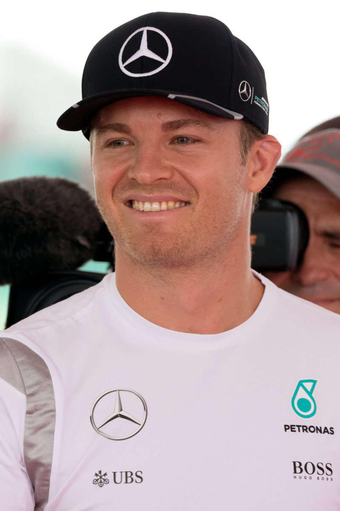

SINTESI DELLA STAGIONE 2016 - IL TRIONFO DI NICO ROSBERG
Era Turbo Ibrida • 21 Gran Premi disputati

Il Mondiale 2016 ha segnato l'apice della guerra fratricida all'interno del box Mercedes tra Nico Rosberg e Lewis Hamilton. Dal clamoroso contatto fratricida al primo giro del GP di Spagna fino alla tesissima finale di Abu Dhabi, dove Hamilton ha rallentato il ritmo per esporre Rosberg agli attacchi degli avversari, Nico ha resistito con doti mentali formidabili vincendo il suo unico, sudato titolo mondiale prima di annunciare a sorpresa il ritiro immediato dalle corse.
🏆 Campione del Mondo Piloti: Nico Rosberg (Mercedes-AMG Petronas F1 Team) - 385 pt
🥈 Secondo classificato: Lewis Hamilton (380 pt)
🏁 Scuderia Campione Costruttori: Mercedes
🏎️ Numero Gran Premi: 21
LA MIGLIOR GARA DELL'ANNO: GRAN PREMIO DEL BRASILE (INTERLAGOS)
Circuito: Autódromo José Carlos Pace (Interlagos)
Un diluvio epocale a San Paolo ha messo alla prova i riflessi dei migliori piloti al mondo. In una gara interrotta da due bandiere rosse, Max Verstappen ha mostrato una maestria innata sul bagnato: scivolato al 16° posto per una sosta errata, ha iniziato a inventare traiettorie all'esterno dove nessuno osava transitare, superando 13 monoposto in appena 16 giri per salire sul podio alle spalle delle Mercedes di Hamilton e Rosberg.
IL SORPASSO PIÙ SPETTACOLARE & DUELLO DELL'ANNO
Max Verstappen su Nico Rosberg all'esterno di Curva 3 a Interlagos
Sotto una pioggia battente, Verstappen ha affiancato la Mercedes del leader del mondiale Nico Rosberg all'esterno della 'Curva do Sol', tenendo l'auto incollata alla traiettoria esterna dove c'era più aderenza, con una sbandata controllata a oltre 290 km/h sul rettilineo principale che ha fatto sobbalzare i telecronisti di tutto il mondo.